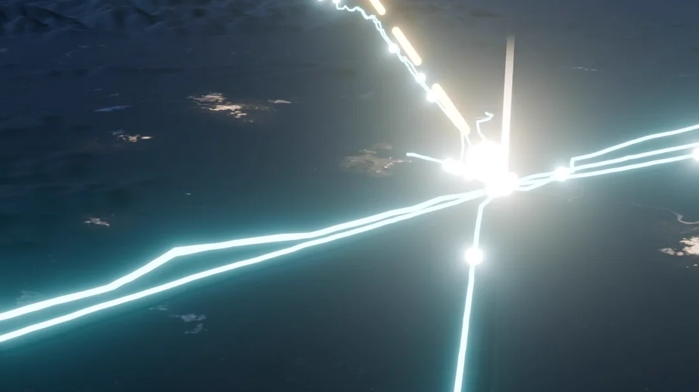

Anomalía de la temperatura del mar en la región Niño 3.4 en —, el valor mensual más alto desde 2023.
NOAA OISST v2.1
Atlas interactivo Energía, clima y territorio en Colombia
Cinco historias de la electricidad colombiana contadas con imágenes de satélite, series de XM y vuelos 3D: el agua, el sol, la red, la costa que no duerme y los pueblos con seis horas de luz.
Pieza final El embalse que se llena con gas
La pieza audiovisual del equipo, en el formato en que se publica. Después, abre cada capítulo y explora los datos que hay detrás de cada escena.
Cinco capítulos Un tema por video
Cada capítulo reúne las escenas del video con sus datos: mapas que cambian mes a mes, un relieve que puedes girar, comparadores satelitales, el reloj de la red y las localidades que se encienden con su horario.
Del calentamiento del Pacífico al embalse de Peñol–Guatapé: mapas mes a mes, un modelo 3D y el antes y después del agua.
 6,22° N · 75,18° O · Peñol–Guatapé
6,22° N · 75,18° O · Peñol–GuatapéEl sol entrega más energía a mediodía y la demanda sigue alta al anochecer. El reloj de la red, día y noche en el Caribe y el almacenamiento.
 Caribe colombiano · Render de Blender
Caribe colombiano · Render de BlenderLos intercambios de electricidad con los vecinos, los corredores de alta tensión y la crisis eléctrica de Ecuador en 2024.
 Cordillera andina · Render de Blender
Cordillera andina · Render de BlenderA las tres de la mañana la costa Caribe gasta más del doble que Bogotá. El reloj del país, el calor de la noche y la factura de 1.064 municipios.
 Atlántico al anochecer · Render de Blender
Atlántico al anochecer · Render de BlenderPueblos donde la luz llega con horario. Las 162 localidades no interconectadas, la distancia a la red, el diésel y lo que cambia con el sol.

Darién de noche · Render de BlenderEn cifras Calculadas en vivo con los archivos del atlas
Anomalía de la temperatura del mar en la región Niño 3.4 en —, el valor mensual más alto desde 2023.
NOAA OISST v2.1
Volumen útil medio del embalse Peñol de agosto a octubre de 2026. Entre junio y diciembre de 2022 fue —.
XM · Volumen útil diario
Mapas mensuales del Pacífico tropical para seguir El Niño de enero de 2023 a octubre de 2026.
Capítulo 01
Archivos y fuentes con ficha de procedencia: series CSV, rásteres GeoTIFF y capas GeoJSON.
Catálogo de datos
Datos abiertos Lo que ves se puede descargar
Cada gráfica y cada mapa del atlas sale de un archivo público con su fuente, su cobertura y su huella SHA-256.